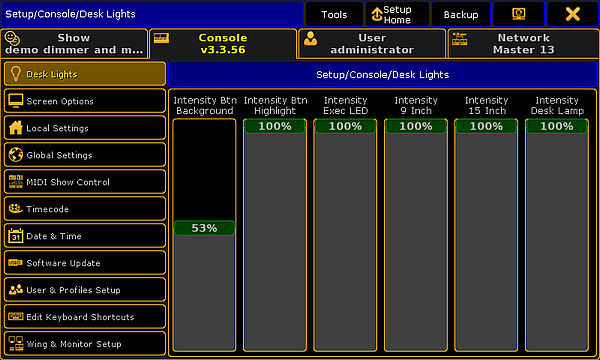

Adjust Intensity of Desk Lights
Use the Setup Menu
The intensity of the desk lights is located in the Setup I Desk Lights.

Setup – Adjusting desk lights
Adjust the intensity of the:
- Background of keys and buttons
- Executor LEDs
- Screens
- Desk lamp
To adjust the intensity of the desk lights:
- Open the Setup by pressing Setup.
- Then, tap Desk Lights.
- To dim the light of your desk, tap the fader and move it downward.
To lighten the desk, tap the fader and move it upward.
The light of your desk has now been adjusted.